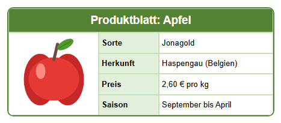


Lernpfad › Lektion 5
Bilder

Die Schaltflächen für Bilder
Sie finden sie auf der Registerkarte  Zelle (C).
Klicken Sie zuerst auf die Zelle, in die das Bild soll.
Zelle (C).
Klicken Sie zuerst auf die Zelle, in die das Bild soll.
- Bild hinzufügen: Wählen Sie eine Datei (png, jpg, gif oder bmp).
- Bild links, in der Mitte oder rechts in der Zelle.

Bildgröße: Originalgröße, An Zelle anpassen (ohne Verzerrung) oder Strecken (auf die ganze Zelle).- Bild löschen: entfernt das Bild wieder aus der Zelle.
So machen Sie es selbst
- Erstellen Sie eine Tabelle mit 3 Spalten und 5 Zeilen. Verbinden Sie die oberste Zeile für den Titel.
- Verbinden Sie in der ersten Spalte die Zellen der Zeilen 2 bis 5: Dort kommt das Bild hin.
- Machen Sie die erste Spalte breit genug (ziehen Sie in den Spaltenköpfen) und die Zeilen hoch genug.
- Klicken Sie auf die große Zelle und auf Bild hinzufügen.
Wählen Sie im Ordner
lessen\afbeeldingendie Dateiappel.png. - Klicken Sie auf , um das Bild zu zentrieren.
- Geben Sie in die anderen Zellen die Angaben ein: Sorte, Herkunft, Preis und Saison.
html\images neben
dem Programm, damit Ihr Entwurf weiter funktioniert, wenn Sie das Original verschieben. Im HTML-Code ist das Bild selbst
eingebettet: Ihre Webseite ist also eine einzige Datei, ohne separate Bilder.Welches Bild wählen Sie?
- Verwenden Sie ein kleines Bild: Ein Foto von Ihrem Handy ist viel zu groß für eine Zelle und macht die Seite schwer.
- Ein png mit durchsichtigem Hintergrund passt schön zu jeder Zellenfarbe.
- Verwenden Sie nur Bilder, die Sie selbst gemacht haben oder verwenden dürfen.
Aufgabe
Machen Sie daraus ein Produktblatt für eine Birne: Ersetzen Sie das Bild durch peer.png aus dem Ordner
lessen\afbeeldingen und passen Sie den Text an. Probieren Sie danach Strecken: Was geht schief?
Lösung
Klicken Sie auf die Zelle mit dem Apfel und auf Bild hinzufügen: Das neue Bild ersetzt das alte.
Wählen Sie peer.png und passen Sie Sorte (z. B. Conference), Preis und Titel an. Mit Strecken wird das
Bild auf die ganze Zelle gestreckt: Die Birne wird breiter und sieht verzerrt aus. Wählen Sie deshalb An Zelle anpassen,
wenn das Bild nicht in die Zelle passt.
Arbeiten Sie unter Linux? Öffnen Sie das Beispiel dann selbst mit Tabellendesigner öffnen: Ordner
lessen/de, Datei les05-productfiche.htd.